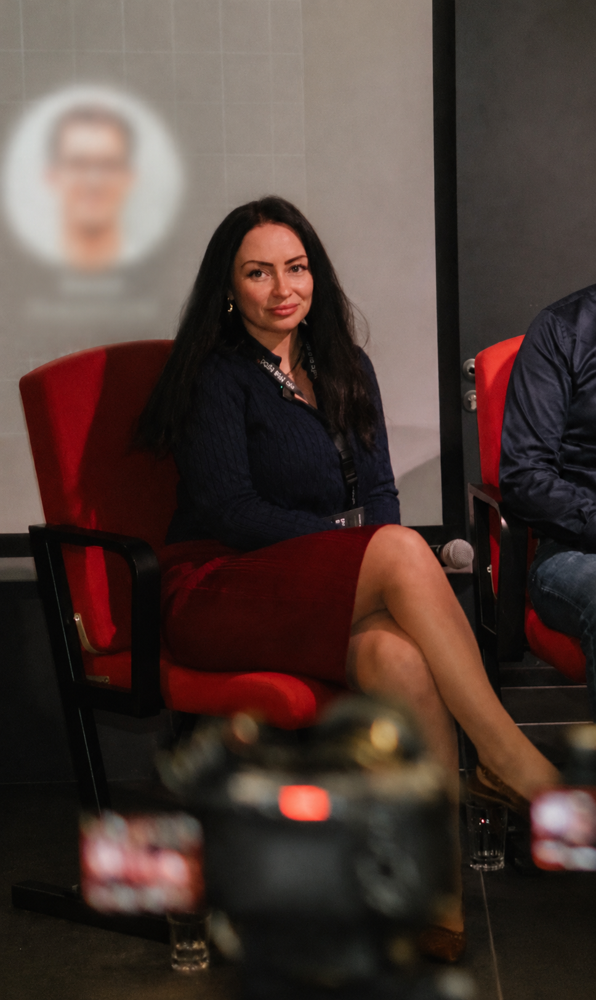

Kariera przestała Ci wystarczać
Chcesz rozwijać się na własnych zasadach, zamiast realizować cudzą wizję sukcesu.
Dla kobiet, które chcą od życia więcej
Pomagam kobietom budować niezależność finansową, biznes, karierę i życie na własnych zasadach. Z odrobiną magii.
Połącz pracę nad przekonaniami z konkretną strategią. Odkryj swoje możliwości, wykorzystaj AI i zacznij świadomie projektować swoją przyszłość.

Być może znasz to uczucie
Wiesz, że stać Cię na więcej, ale nie zawsze wiesz, od czego zacząć.
Chcesz rozwijać się na własnych zasadach, zamiast realizować cudzą wizję sukcesu.
Nie wiesz, jak zamienić wiedzę i doświadczenie w ofertę, za którą ktoś zapłaci.
Twoje bezpieczeństwo zależy od jednego źródła dochodu.
Chcesz wykorzystać nowe technologie, by mieć więcej czasu dla siebie i nie zrobić z biznesu kolejnego etatu.
Strach przed oceną, porażką, utratą pieniędzy, widocznością blokuje Cię przed osiągnięciem tego o czym marzysz.
Czekasz na więcej czasu, pieniędzy albo idealny moment, który nigdy nie nadchodzi i chcesz to w końcu zmienić.
Manifest Ponadprzeciętnej
Wierzę, że kobieta, która rozumie siebie, pieniądze i świat, w którym żyje, może świadomie tworzyć więcej możliwości. Nie chodzi o to, by pracować więcej. Chodzi o to, by inaczej zaprojektować swoje życie.
Twoja transformacja
Wybierz kierunek, który jest dziś dla Ciebie najważniejszy.

01 / Kariera
Odkryj mocne strony, wybierz kierunek i rozwijaj kompetencje przyszłości, również z wykorzystaniem AI.
Cel: konkretna strategia kariery i droga do lepszych zarobków.
02 / Biznes
Znajdź sposób na monetyzację swoich talentów, zbuduj ofertę i zaplanuj pierwsze działania sprzedażowe.
Cel: własna marka, oferta i strategia pozyskania klientów.
03 / Pieniądze
Rozwijaj wiedzę finansową, poznaj możliwości dywersyfikacji dochodów i zaplanuj budowanie bezpieczeństwa.
Cel: większa niezależność, budowa poduszki finansowej i przemyślany plan inwestycji w siebie.04 / Tożsamość
Rozpoznaj schematy, które wpływają na Twoje decyzje i przeprogramuj je, aby służyły Ci w osiąganiu celów.
Cel: transformacja podejścia do zmian, budowa pewności siebie, umiejętność manifestowania i wzmocnienie intuicji.Moja filozofia pracy
Wewnętrzna transformacja spotyka się z konkretną strategią.
Talenty, wartości i zasoby.
Ograniczające przekonania i schematy.
Własną definicję sukcesu.
Realną strategię zmiany.
Działaj zgodnie z nową wizją.


Poznaj założycielkę
Kilka lat temu jako samotna matka postanowiłam zmienić ścieżkę zawodową, by zapewnić sobie i dziecku lepszą przyszłość. Zbudowałam karierę w IT, cyberbezpieczeństwie i AI. Występowałam na konferencjach, zgłębiałam świat finansów poprzes studia i inwestowanie.
ALE... zrozumiałam, że dobre zarobki nie zawsze oznaczają niezależność. Można osiągnąć sukces zawodowy, a mimo to dalej czuć, że czegoś nam brakuje. Gdy na drodze do celu pojawia się coraz więcej problemów, być może to znak by zmienić kierunek. I tak było ze mną.
Ponadprzeciętna to miejsce, w którym łączę strategię, technologię, finanse, rozwój osobisty i duchowość czyli wszystko to co pozwoliło mi wyjść z życiowego chaosu, który zbudowałam myśląc, że podążam we właściwym kierunku.
Pracuj ze mną
Wybierz formę współpracy dopasowaną do Twojego wyzwania.
01 / Długofalowa zmiana
Indywidualna praca nad kierunkiem kariery, biznesem i przekonaniami.
02 / Konkretna decyzja
Skupiamy się na jednym wyzwaniu, decyzji lub pomyśle.
03 / Samopoznanie
Symboliczna interpretacja kosmogramu w kontekście kariery, biznesu, marki, finansów, relacji.
04 / Edukacja
Praktyczna edukacja dla kobiet, organizacji i kobiecych społeczności.
Porozmawiajmy przez 20 minut i sprawdźmy, czy mogę Ci pomóc.
Umów bezpłatną rozmowęListy od Ponadprzeciętnej
Piszę o pieniądzach, przyszłości pracy, AI, biznesie, przekonaniach i odwadze do budowania własnego życia.
Dołącz i dowiedz się jako pierwsza o premierze darmowego e-booka „Odczaruj siebie”.
Rozmawiajmy o ambicji, przyszłości i życiu na własnych zasadach.